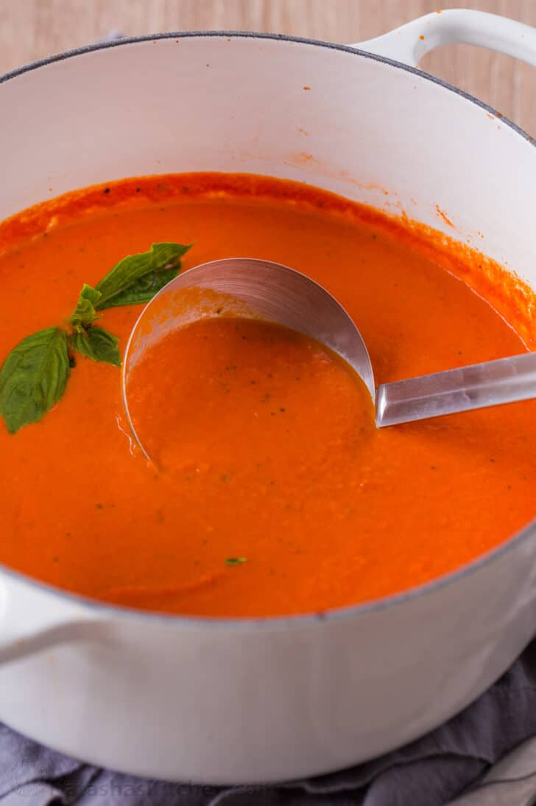

Tomato Soup

Easy Tomato Soup
This Creamy Tomato Soup is easy, comforting, and has a rich flavor profile. You can make this tomato soup creamy or chunky if you prefer.
Ingredients
-
Butter
Use unsalted butter to sautee onions.
-
Yellow onion
Onion adds a balanced sweetness.
-
Garlic
You’ll need 1 Tbsp minced from about 3 cloves.
-
Crushed tomatoes
With their juice, preferably San Marzano tomatoes.
-
Chicken stock
For the best flavor use homemade chicken broth.
-
Basil
Chop and add 1/4 cup fresh basil, plus more to serve. Basil leaves are easily bruised so chop by stacking a bunch of leaves then roll them into a log and cut into thin strips.
-
Black pepper
Start with 1/2 tsp and add more to taste.
-
Whipping cream
Adds a creaminess to the soup and offsets acidity.
-
Parmesan cheese
Adds saltiness to the soup and balances acidity. Adding parmesan adds enough salt without the need to add more.
Steps
- Saute Aromatics – heat a non-reactive pot over medium heat. Melt in 4 Tbsp butter then sautee onions until softened and golden (10-12 min). Add minced garlic and saute another minute.
- Make the tomato soup base – stir in two 28 oz cans of crushed tomatoes with their juice, your chicken stock, chopped basil, sugar and black pepper. Bring to a boil then reduce heat, partially cover and simmer 10 minutes.
- Blend if desired – use an immersion blender in the pot or blend in batches using a blender (be careful not to overfill the blender with hot liquid) and return soup to the pot.
- Add cream and parmesan – stir in the heavy cream and shredded parmesan. Return to a simmer and season to taste if needed.
- Serve – ladle into warm bowls and garnish with more parmesan and basil.